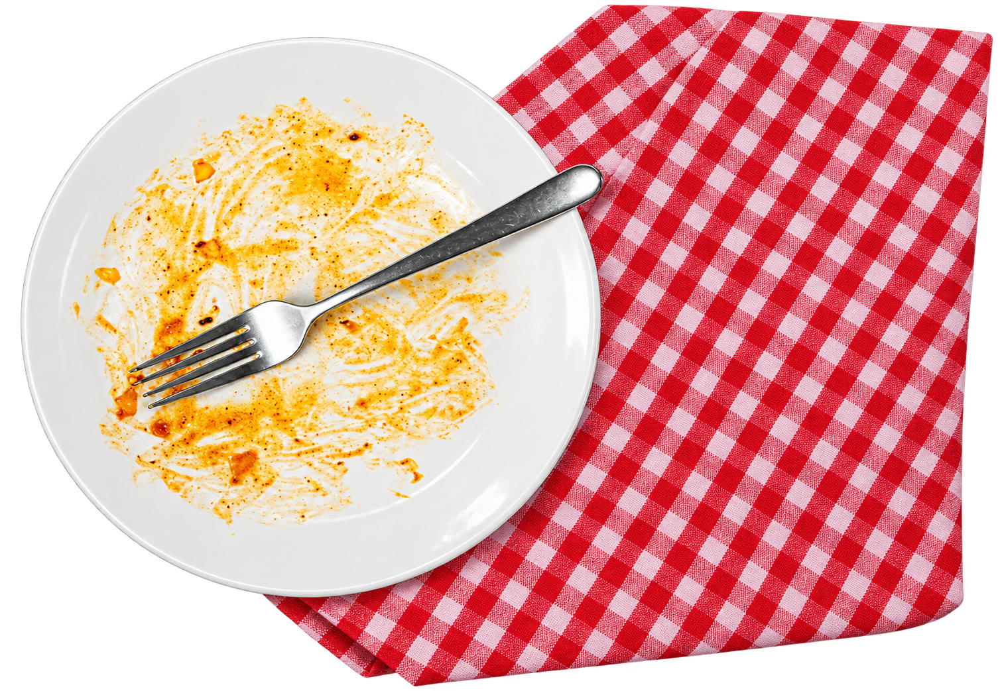
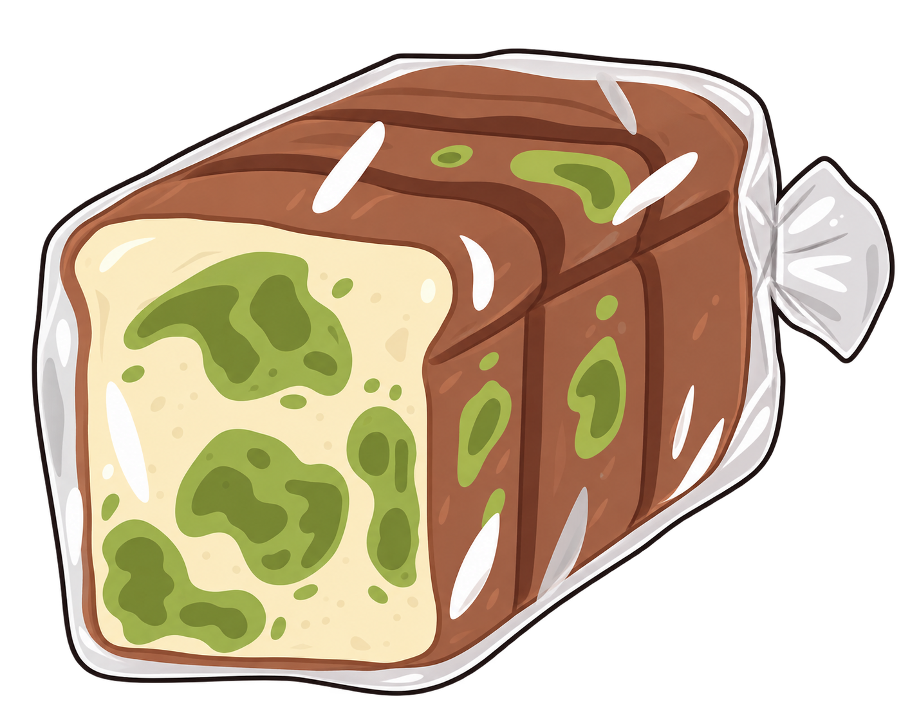
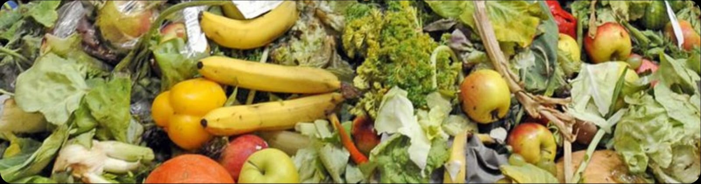
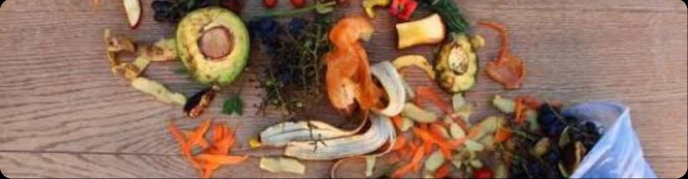
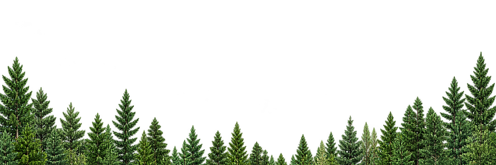

Overbuying
Buying more food than
needed.
Food Waste is food that still safe to eat but is
not consumed and end up being discarded.


Food waste can happen at many stages, including our daily lives
Buying more food than
needed.

Food spoils faster due
to incorrect storage

Serving more food than
we can finish
Not planning meals or
food usage

Increases greenhouse gas emissions and
puts more pressure on natural resources
Results in a loss of money, from food that is
never consumed.

Contributes to food insecurity, while many
people too lack adequate food access.
